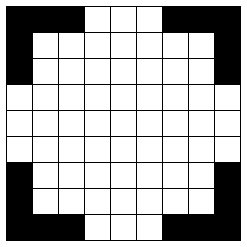
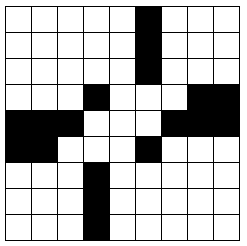

Solution: Make Your Own Crossword
Answer: MUDDY
Written by Josh Alman
The first step is to make a crossword grid satisfying all the given constraints. There are, of course, many ways to go about doing this, but here are a few tips and strategies which can help make it a manageable task:
- Start by placing most, but not all, of your black squares, so that you have some flexibility later when filling in white squares with letters. It helps if you can divide up the grid into four or five smaller regions which don't need many words crossing between them. Smaller regions are easier to fill with words, and you can assign just one or two of the tougher letters to each region so that you don't have to deal with them all at once.
- Next, pick your words containing the letters V, W, X, Y, and Z (you need two words for each letter which will cross each other), and place them in your grid. It helps to pick words that otherwise have common letters so that filling in the rest of the grid is easier. For instance, we might pick ZOO and OZONE as our two words containing Z.
- Finally, fill in the rest of the grid. The tool for checking whether words are common or uncommon is helpful here; we should try not to put many uncommon words in the first regions of the grid we fill out, so that we have some remaining for later regions.
- There is software available which can help you find words to fill in crossword grids. This can be a useful tool, although it isn't necessary: we were able to make a number of grids without any computer help.
| This grid would be hard to fill in:: | This grid would be much easier: |
|---|---|
|  |  |
| Our Puzzle: | Returned grid: |
|---|---|
M A D A M * P E A U V U L A * O R C T O K E N * L E T E W E * D U O * * * * * M A P * * * * * O A T * L A P T A X * O Z O N E O R E * R O U T E P E N * Y O D E L | U A S A U * L W A R * R R A * C E N A C E W N * R W A W * W * S R C * * * * * U A L * * * * * C A A * R A L A A * * C * C N W C E W * E C R A W L W N * * C S W R |
We observe that every instance of a given character in our original grid was replaced by another character. In our example, the mapping is as follows:
| Original: | * | A | B | C | D | E | F | G | H | I | J | K | L | M | N | O | P | Q | R | S | T | U | V | W | X | Y | Z |
|---|---|---|---|---|---|---|---|---|---|---|---|---|---|---|---|---|---|---|---|---|---|---|---|---|---|---|---|
| Replaced By: | * | A | # | N | S | W | # | # | # | # | # | E | R | U | N | C | L | # | E | # | A | R | * | * | * | * | * |
We can see that the second row of the map is starting to spell out the cluephrase: ANSWER UNCLEAR.... However, we are missing eight letters in our original grid (the ones mapping to # above), and so we're missing the last eight letters of the cluephrase as well. With some more work (either by modifying our original grid or starting from scratch) we can find another grid with more unique letters in it, for instance:
| Our Puzzle: | Returned grid: |
|---|---|
C A N * * * W A X A T O P * H E R O B O V E * U S E R * M A G E N T A * * * * A F T * * * * M A S T E R S * M E N U * R A I L A R K S * S I Z E Y E H * * * L E D | S A R * * * * A * A I O R * N E S O N O * E * L O E S * A A U E R I A * * * * A R I * * * * A A O I E S O * A E R L * S A C E A S L O * O C * E * E N * * * E E W |
The new mapping is:
| Original: | * | A | B | C | D | E | F | G | H | I | J | K | L | M | N | O | P | Q | R | S | T | U | V | W | X | Y | Z |
|---|---|---|---|---|---|---|---|---|---|---|---|---|---|---|---|---|---|---|---|---|---|---|---|---|---|---|---|
| Replaced By: | * | A | N | S | W | E | R | U | N | C | # | L | E | A | R | O | R | # | S | O | I | L | * | * | * | * | * |
Now we're only missing two letters, so we get all but the last two letters of the cluephrase: ANSWER UNCLEAR OR SOIL??. The final cluephrase (which we can either guess or work harder to get more letters of) is ANSWER UNCLEAR OR SOILED, so the final answer is MUDDY.
Author’s Notes
This puzzle was inspired by my recent attempts to learn how to make crossword puzzles. I've been solving crossword puzzles for a while, but constructing a puzzle is a whole different challenge. I tried to make the constraints somewhat similar to what a cruciverbalist might aim for in a real puzzle. That said, it's hard to express what makes a good crossword puzzle in a way a computer can understand and check, and I'm sure most of the grids that solvers make for this puzzle would need some editing before they could appear in a newspaper. At any rate, I hope I've motivated some of you to try your hands at crossword making too!
If you made a grid that you think is particularly interesting, please send it in to us! We'd love to see it and maybe post a collection of crossword puzzles in our wrapup.
Thanks to Nathan Pinsker for some technical assistance, and the datamuse API which I used for word lookup.